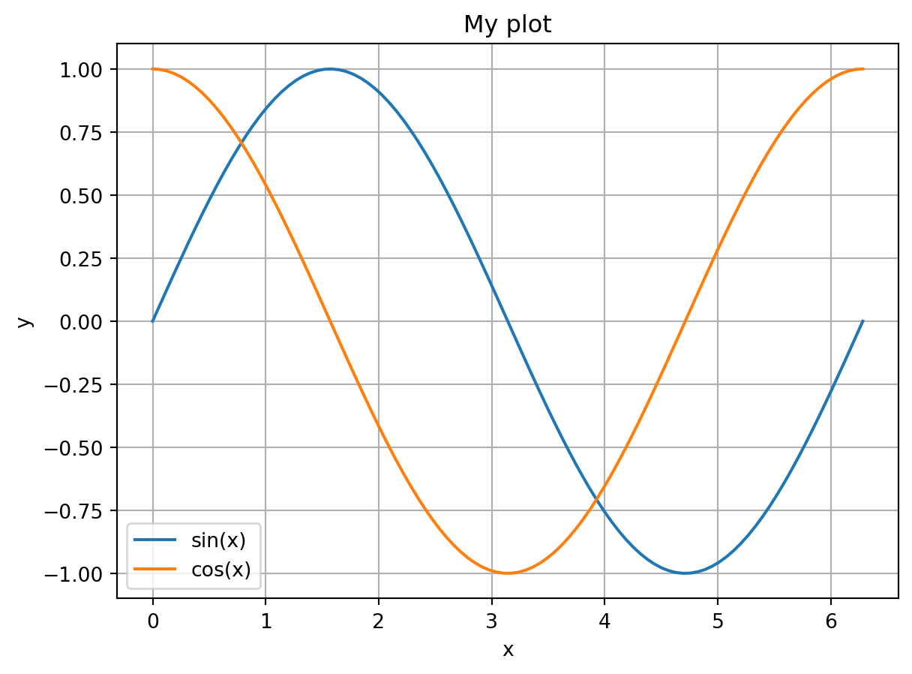
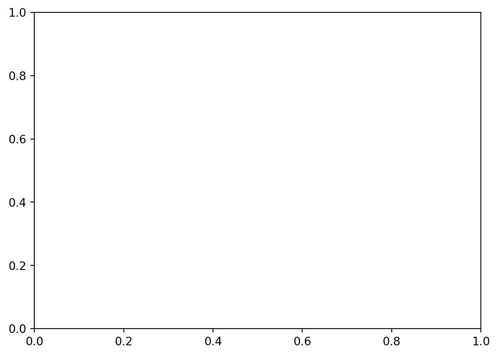
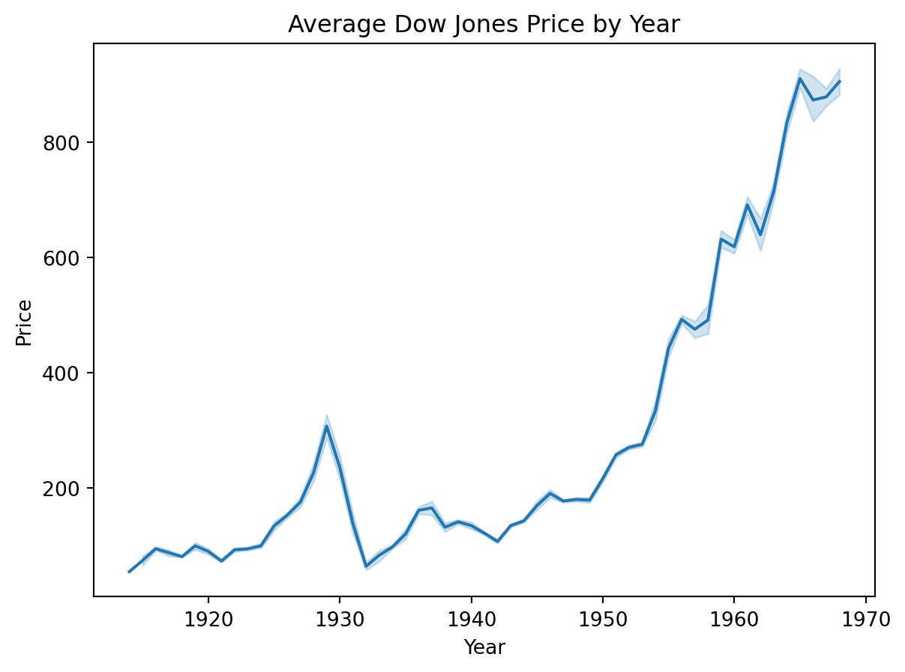

from matplotlib import pyplot as plt1. Instroduction to Matplotlib and Seaborn
Note: Parts of this tutorial were copied from the Syracuse University OSPO Advanced Python Workshop 2024.
In this tutorial you will learn the basics of how to create plots of data using Seaborn, which depends on Matplotlib.
Note
To run this tutorial you will need both seaborn and matplotlib installed. Since seaborn depends on matplotlib, we only need to explicilty install seaborn; matplotlib will be installed along with it. To install seaborn, open a Terminal, activate your ist356 conda environment, and run:
pip install seabornOverview
Anatomy of a visualization
https://carbondesignsystem.com/data-visualization/chart-anatomy/
- Canvas / Plot Area - The area where the data is visualized.
- Axis - The x and y lines that help to orient the viewer to the data.
- Title - A brief description of the data being visualized.
- Series / Trace - A single set of data that is plotted on the chart.
- Legend - A key that explains the colors or symbols used in the visualization / series.
Data Plotting: Kinds of Data
- Categorical data - Discrete values like Yes/No, Red/Green/Blue, etc.
- Ordinal data - Categorical data that has an order to it. Monday, Tuesday, Wednesday, etc.
- Time series data - Data that is recorded over time. Stock prices, temperature, etc.
- Continuous data - Measuments, such as weight, height, price, etc.
- Discrete data - Data that can only take certain values. Number of children, number of cars, etc.
- Geospatial data - Data that is tied to a location. Latitude, Longitude, etc.
Matplotlib
Matplotlib is a multi-platform data visualization library built on NumPy arrays, and designed to work with the broader SciPy stack. One of Matplotlib’s most important features is its ability to play well with many operating systems and graphics backends. Matplotlib supports dozens of backends and output types, which means you can count on it to work regardless of which operating system you are using or which output format you wish. This cross-platform, everything-to-everyone approach has been one of the great strengths of Matplotlib. It has led to a large user base, which in turn has led to an active developer base and Matplotlib’s powerful tools and ubiquity within the scientific Python world.
Matplotlib is an excellent graphics library for generating scientific figures, with a slightly steeper learning curve than other libraries and a somewhat aging API, yet it is still the most widely used library for plotting in the Python community. It allows for any kind of visualization, from quick and simple to complex and custom. Many other libraries are built on top of Matplotlib and are designed to work in conjunction with analysis tools from the SciPy stack, such as NumPy and Pandas.
Although you will use Seaborn most in this course (and likely outside this course) it is good to have a basic understanding of matplotlib. Here, we provide a very quick crash course.
To use matplotlib, we first need to import it. Specifically, we need to import the pyplot module, which we will rename plt (as is typical):
Basic line plot with Matplotlib
At its most basic, matplotlib uses “figures” and “axes”. These create the canvases that you can plot things on. An axes is what a plot is created on; a figure can hold one or more axes. To create them:
fig = plt.figure()
ax = fig.add_subplot()
Ok, so how do we actually make a plot? Let’s create a simple line plot of a sine wave, evaluated between 0 and 2pi. First, we’ll create our data with numpy:
import numpy as np
x = np.linspace(0, 2*np.pi, 100)
y = np.sin(x)Now let’s create a figure, axes, and plot them using the plot function:
fig = plt.figure()
ax = fig.add_subplot()
ax.plot(x, y)
Note that the plotting function is a method of the axes. We can make a nicer looking plot by adding things like axis labels, a legend, and an axis label:
fig = plt.figure()
ax = fig.add_subplot()
ax.plot(x, y, label='sin(x)$')
ax.set_xlabel('x')
ax.set_ylabel('y')
ax.legend()
ax.grid()
ax.set_title('My plot')Text(0.5, 1.0, 'My plot')
We can also plot more than one thing on a single plot. Let’s plot cos(x) on the same plot:
fig = plt.figure()
ax = fig.add_subplot()
ax.plot(x, y, label='sin(x)')
ax.plot(x, np.cos(x), label='cos(x)')
ax.set_xlabel('x')
ax.set_ylabel('y')
ax.legend()
ax.grid()
ax.set_title('My plot')Text(0.5, 1.0, 'My plot')
Notice that the color of the second plot automatically changed. You can alternatively specify the color manually using the color argument in plot. You can also do things like set the linestyle and linewidth. For example:
fig = plt.figure()
ax = fig.add_subplot()
ax.plot(x, y, lw=2, label='sin(x)')
ax.plot(x, np.cos(x), lw=2, ls='--', label='cos(x)')
ax.set_xlabel('x')
ax.set_ylabel('y')
ax.legend()
ax.grid()
ax.set_title('My plot')Text(0.5, 1.0, 'My plot')
Stateful execution
In the above examples we explicitly created a figure, axes, and added plots to the axes.
Matplotlib has another, “stateful”, interface. In this case, the figure and axes are automatically created and managed by matplotlib in the background. Instead of calling methods, you instead call methods on the pyplot module directly. Here’s the same example as above, but using the stateful interface:
plt.plot(x, y, lw=2, label='sin(x)')
plt.plot(x, np.cos(x), lw=2, ls='--', label='cos(x)')
plt.xlabel('x')
plt.ylabel('y')
plt.legend()
plt.grid()
plt.title('My plot')Text(0.5, 1.0, 'My plot')
Notice that in this case you don’t interact with the figure or axes at all. Instead, matplotlib creates the a figure and axes for you, which are the “current” figure/axes. All plotting commands are automatically added to those plots. You can retrieve the current figure and axes with:
# get the current figure
fig = plt.gcf()
# get the current axes
axes = plt.gca()
As you can see, the stateful interface can be quicker and easier to use if you are only creating a single plot at a time. It is the more common interface you will see in various examples on the web. Seaborn also supports a stateful interface that we will use below.
However, I prefer directly interacting with the figure and axes as we did initially. This causes less confusion later on, and it makes it easy to create more complicated figures with multiple axes. What to use is up to you, and it depends on the situation.
Seaborn
Seaborn is a Python data visualization library based on Matplotlib. It provides a high-level interface for drawing attractive and informative statistical graphics.
Consider seaborn as a replacement for Matplotlib, Pythons de-facto plotting library. Seaborn is built on top of Matplotlib and closely integrated with pandas data structures. You can think of Matplotlib and Seaborn as being to visualization as numpy and Pandas is to data wrangling.
To use Seaborn, we need to import it:
import seaborn as snsDatasets we will use
Seaborn has some in-built toy datasets that we will use to illustrate its plotting capabilities.
- “penguins” The Palmer Penguins dataset: https://github.com/allisonhorst/palmerpenguins
- “dowjones”: The Dow Jones Industrial Stock Price Index: https://fred.stlouisfed.org/series/M1109BUSM293NNBR
We will also use: - Analyzing Mobile Usage Patterns and User Behavior Classification Across Devices https://www.kaggle.com/datasets/valakhorasani/mobile-device-usage-and-user-behavior-dataset
Plot Types
Line plot
To start, let’s recreate the simple line plot we did above with matplotlib:
lp = sns.lineplot(x=x, y=y, label='sin(x)')
sns.lineplot(x=x, y=np.cos(x), lw=2, ls='--', label='cos(x)')
lp.set_xlabel('x')
lp.set_ylabel('y')
lp.legend()
lp.grid()
lp.set_title('My plot')Text(0.5, 1.0, 'My plot')
That’s nice, but not that much better than the matplotlib interface. Where Seaborn really shines is its interface with Pandas. For example, let’s create a DataFrame from x and sin(x):
import pandas as pd
df = pd.DataFrame({'x': x, 'sin(x)': np.sin(x)})
sns.lineplot(data=df, x='x', y='sin(x)')
Notice that an x and y label were generated automatically for us. Things get even more interesting if you use the hue argument. Suppose we have dataframe that has both sin and cos values in a single column, with a separate column that indicates which rows below to which function:
df = pd.DataFrame({'x': np.tile(x, 2), 'Trig Functions': np.append(np.sin(x), np.cos(x)),
'Function': ['sin']*len(x) + ['cos']*len(x)})
print(df.head())
print(df.tail()) x Trig Functions Function
0 0.000000 0.000000 sin
1 0.063467 0.063424 sin
2 0.126933 0.126592 sin
3 0.190400 0.189251 sin
4 0.253866 0.251148 sin
x Trig Functions Function
195 6.029319 0.967949 cos
196 6.092786 0.981929 cos
197 6.156252 0.991955 cos
198 6.219719 0.997987 cos
199 6.283185 1.000000 cosNow we can plot both with a single line, using the hue argument:
sns.lineplot(data=df, x='x', y='Trig Functions', hue='Function')
Notice that it created x and y labels, as well as a legend for us! The hue parameter is especially useful for bar plots, as we’ll see below.
Errorbar
Seaborn also makes it easy to create plots with errorbars on it. To illustrate, let’s use the Dow Jones Industrial data:
dow = sns.load_dataset("dowjones")
dow.head()| Date | Price | |
|---|---|---|
| 0 | 1914-12-01 | 55.00 |
| 1 | 1915-01-01 | 56.55 |
| 2 | 1915-02-01 | 56.00 |
| 3 | 1915-03-01 | 58.30 |
| 4 | 1915-04-01 | 66.45 |
CautionCode Challenge 1.1
Make a line plot of the Dow price versus year using Seaborn.
CautionSolution
sns.lineplot(data=dow, x="Date", y="Price")
Now suppose we want to average the price per year. First, let’s create a new column that just has the year. To do that, we’ll create a function that extracts the year from the Date column:
def parse_year(date):
return date.yearNow apply it:
years = dow['Date'].apply(parse_year)
dow['Year'] = yearsNow let’s plot it:
lp = sns.lineplot(data=dow, x="Year", y="Price", estimator='mean')
lp.set_title("Average Dow Jones Price by Year")Text(0.5, 1.0, 'Average Dow Jones Price by Year')
Seaborn has shown the average for each year, and has automatically added errorbars showing the standard deviation for each year.
The Bar Plot
A bar plot is a plot that presents categorical data with rectangular bars with lengths proportional to the coninouos or discrete values they represent. One axis of the plot shows the specific categories being compared, and the other axis represents a measured value.
Seaborn will automatically aggregate the data for you, using the estimator named argument. It takees the values "mean", "count", "sum", "min" or "max".
To illustrate this, we will use the Palmer Penguins data:
import seaborn as sns
pengo = sns.load_dataset("penguins")
pengo.head()| species | island | bill_length_mm | bill_depth_mm | flipper_length_mm | body_mass_g | sex | |
|---|---|---|---|---|---|---|---|
| 0 | Adelie | Torgersen | 39.1 | 18.7 | 181.0 | 3750.0 | Male |
| 1 | Adelie | Torgersen | 39.5 | 17.4 | 186.0 | 3800.0 | Female |
| 2 | Adelie | Torgersen | 40.3 | 18.0 | 195.0 | 3250.0 | Female |
| 3 | Adelie | Torgersen | NaN | NaN | NaN | NaN | NaN |
| 4 | Adelie | Torgersen | 36.7 | 19.3 | 193.0 | 3450.0 | Female |
Each row in the data set represents measurements for a single penguin. Let’s make that more explicit by adding a “count” column, which we’ll use to keep track of the number of penguins in the dataset.
pengo['count'] = 1Now lets create a bar plot showing the total number of penguins by species. To separate them out, we’ll use the hue argument:
plot = sns.barplot(data=pengo, x="species", y="count", hue="species", estimator="sum")
plot.set_title("Penguin species count")Text(0.5, 1.0, 'Penguin species count')
Same plot with method chaning
You can chain the title onto the plot.
sns.barplot(data=pengo, x="species", y="count", hue="species", estimator="sum").set_title("Penguin species count")Text(0.5, 1.0, 'Penguin species count')
CautionCode Challenge 1.2
Using the Palmer penguins data, make a bar plot of body mass (y axis) vs species (x axis) , separated by sex.
CautionSolution
sns.barplot(data=pengo, x="species", y="body_mass_g", hue="sex", estimator="mean")